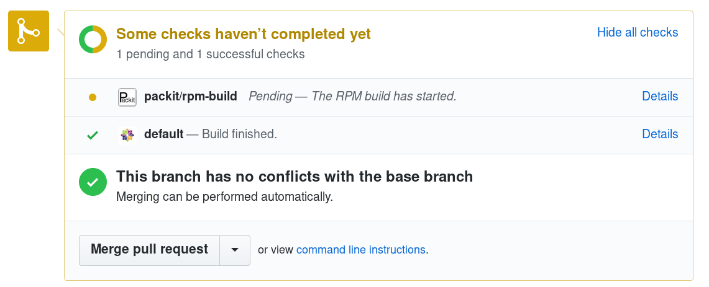
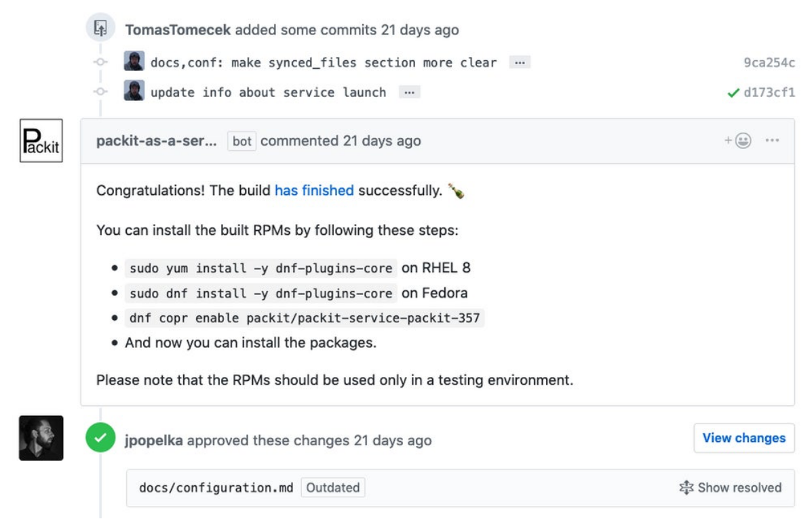
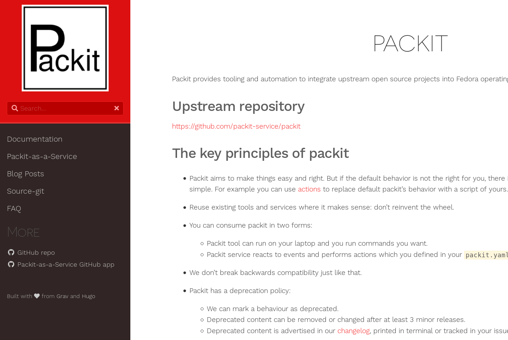
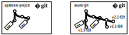

class: center, middle # Bring your upstream releases to Fedora Rawhide in one step --- class: center, middle  ---  ---  --- # Packit * CLI tool * Has python API ``` $ dnf install packit $ packit --help ``` --- # Packit (cont'd) ``` $ packit status https://github.com/packit-service/packit Dist-git versions: Upstream releases: f29: 0.5.0 0.5.0 f30: 0.5.0 0.4.2 master: 0.5.0 0.4.1 Latest Bodhi updates: Update Karma status ------------------------------------------- ------- -------- packit-0.5.0-1.fc29 python-ogr-0.6.0-1.fc29 0 testing packit-0.5.0-1.fc30 python-ogr-0.6.0-1.fc30 0 testing packit-0.4.2-1.fc29 python-ogr-0.5.0-1.fc29 2 stable Latest Koji builds: f29: packit-0.4.2-1.fc29 f30: packit-0.4.2-1.fc30 f31: packit-0.5.0-1.fc31 ``` --- # Packit Service * GitHub app * Uses packit tool API to do things * No API (yet) * No client (yet) --- # Current state (cont'd)  --- # Current state (cont'd)  --- # Current state (cont'd)  --- # Current state (cont'd) https://packit.dev/  --- class: center, middle # So, how did the bet go? --- class: center, middle # So, how did the bet go?  --- # Upstream release → Rawhide Using `packit` -- ``` $ cd my-upstream-project $ git fetch --tags --all $ kinit $USER@FEDORAPROJECT.ORG ``` -- ``` $ packit propose-update --dist-git-branch master --no-pr . 0.5.0 ``` -- ``` $ packit build --dist-git-branch master ``` --- # Upstream release → Rawhide (cont'd) * Using packit service * Jobs -- ```yaml $ cat .packit.yaml jobs: - job: propose_downstream trigger: release metadata: dist-git-branch: master ``` -- * No builds, yet. --- class: center, middle # FAQ --- # What if the upstream devs don't care about Fedora and RPM spec files?  --- # Do I really need to have a spec file in the upstream repo? -- No. -- ```yaml actions: post-upstream-clone: > wget https://src.fedoraproject.org/rpms/systemd/raw/master/f/systemd.spec ``` --- class: center, middle # Packit workshop ## Saturday, 3pm, Panorama --- # Thanks for coming! * <span class="fa fa-github-square"></span> [github.com/TomasTomecek/speaks](https://github.com/TomasTomecek/speaks) * <span class="fa fa-github-square"></span> [github.com/packit-service](https://github.com/packit-service) * <span class="fa fa-globe"></span> [https://packit.dev/](https://packit.dev/) * <span class="fa fa-envelope"></span> user-cont-team@redhat.com